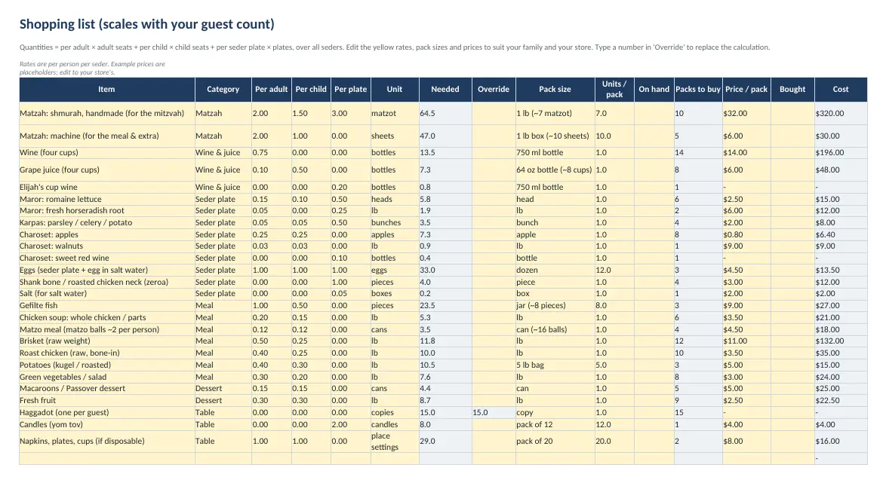
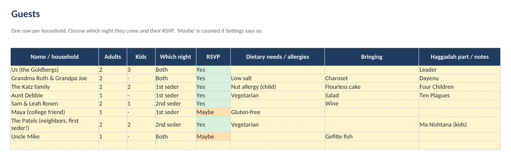
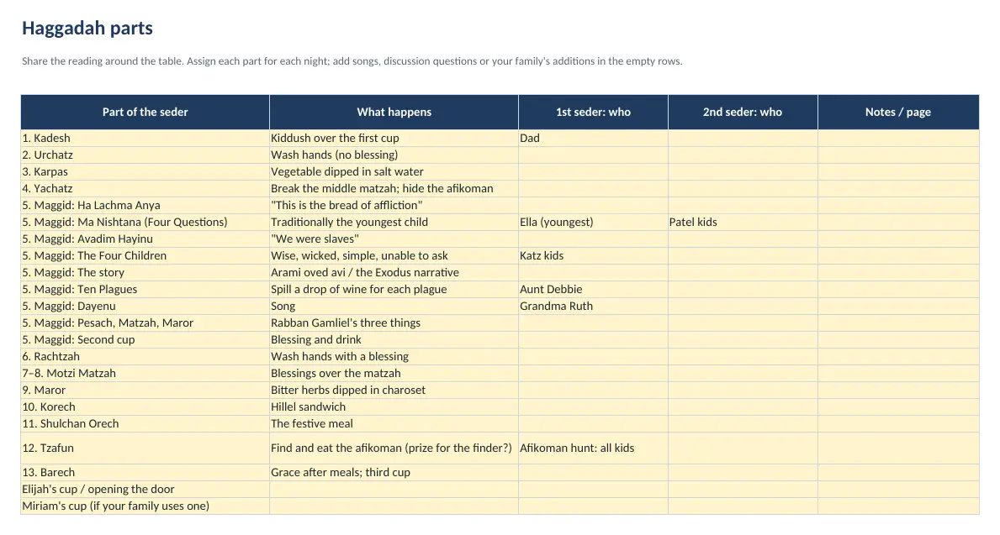
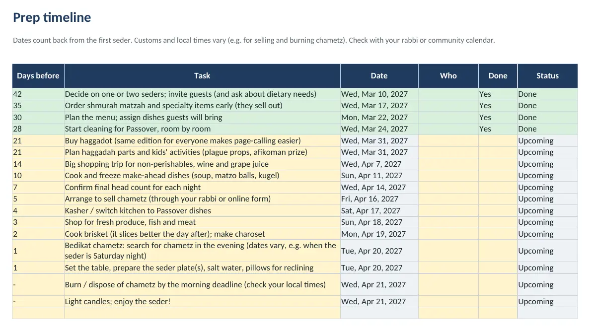

Passover Seder Planner: a calm seder, enough matzah
Guests for one or two seders, a shopping list that scales with your head count, a menu and cooking plan, haggadah parts for everyone, and a prep timeline counted back from the seder.
- One or two seders
- Shopping list scales by guests
- Works in Google Sheets
- No macros
Type who's coming each night and the shopping list recalculates: shmurah and machine matzah, wine and grape juice, maror, eggs, brisket, soup, dessert, haggadot. Adjust any rate to your family's custom.
Excel + Google Sheets · $15 one-time · instant download · screenshots ↓ · what's inside ↓
See it in action
Screenshots from the filled-in example file that comes with the planner (names and numbers are made up).





What's inside
Shopping list that scales
26 items with per-adult, per-child and per-seder-plate rates; packs to buy, on hand and estimated cost.
Guests for each night
Adults and kids, 1st seder, 2nd seder or both, RSVP (count 'maybe' or not), allergies and what they're bringing.
Haggadah parts
Kadesh to Nirtzah plus Ma Nishtana, the Four Children, the plagues, Dayenu and the songs, per night.
Menu & cooking plan
Dishes, who makes them and how many days ahead; prep dates calculated from the seder date.
Prep timeline
17 dated tasks: ordering shmurah matzah, cleaning, selling and burning chametz, cooking ahead.
Seder plate checklist
Every item on the plate and table with what it means, ready to tick off.
How it works
Buy & download
Pay with PayPal or any card. Your download page opens right away.
Fill in Settings
Date, budget and a few basics. Five minutes, and every sheet connects.
Update as you go
Vendors, RSVPs, gifts, tasks. The dashboard keeps itself current.
Who it's for
Anyone hosting a seder, from a first-time host with 6 guests to a family hosting 30 across two nights.
Questions
Where do the quantities come from?
Ritual items start from the per-person guidance Chabad.org publishes (for example 3 matzot per seder plate plus about 2 per other participant per seder). Meal amounts are common catering rules of thumb. Every rate is a yellow cell you can change.
We only do one seder.
Set 'Number of seders' to 1 on the Settings sheet and every quantity halves automatically.
Can I try the numbers first?
Yes. Our free seder shopping calculator uses the same rates.
Does it work in Google Sheets?
Yes. The file uses only standard formulas (no macros, no add-ins), so it works in Google Sheets: upload it to Google Drive and open it with Google Sheets. Formatting and charts can look slightly different. That way you can share it with your partner or family and edit together from any phone.
What versions of Excel does it need?
Excel 2016 or newer, Excel 365, Excel for Mac and Excel on phones and tablets. It also opens in LibreOffice and Apple Numbers (some charts may look different in Numbers).
How do I get the file?
Right after you pay you land on a download page with the blank planner and a filled-in example. Bookmark that page to download again later. PayPal also emails you a receipt.
Do I need a PayPal account?
No. You can pay with any debit or credit card through PayPal's guest checkout, or use your PayPal account if you have one.
Can I get a refund?
These are instant digital downloads, so we don't refund simply because you changed your mind. But if the file doesn't open or doesn't work as described and we can't fix it, you get your money back. See the refund policy.
Jewish Life Bundle: all 4 planners
Bar/Bat Mitzvah, Jewish Wedding, Passover Seder and Holiday Hosting for $49 instead of $73.